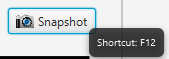
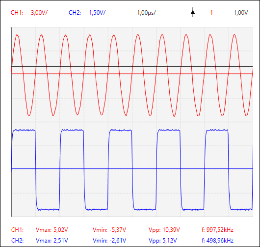

Snapshot Feature
The GUI has an integrated 'Snapshot' feature which can be utilized to make a snapshot of the signal graph including the 'Adjusted Parameter Panel' and 'Measurement Panel'.
The 'Snapshot' button is located next to the 'Probe and Sample Rate Panel'. The shortcut for this feature is 'F12', shown in the image below.
When the 'Snapshot' button is pressed, a file chooser menu is opened which allows the user to specify the path. Finally a snapshot is taken, illustrated in the image below.
When the 'Snapshot' button is pressed again the corresponding file chooser menu is not opened anymore. Nevertheless, in the menu bar (Settings->Snapshot) the GUI provides the possibility to change the directory and the file extension (.png or .gif) individually. Even the file name can be customized. Furthermore, the color of the snapshot can be selected either grayscale or colored. The image below shows the snapshot dialog in which the mentioned settings can be adjusted.

Additionally to the entered file name, an index and a timestamp is added per default.